Hello, I'm
Denisa Ajeng Sabrina S.Si
SEO Specialist, Environmental, & Data Analyst
An SEO and Environmental Data Specialist with strong expertise in remote sensing, spatial analysis, and content optimization. I translate complex geospatial datasets and search trends into clear, actionable insights to support planning and digital visibility. With hands-on experience in Yoast SEO, ArcGIS, QGIS, Python, and machine learning, I'm committed to delivering accurate data-driven solutions for professional needs.
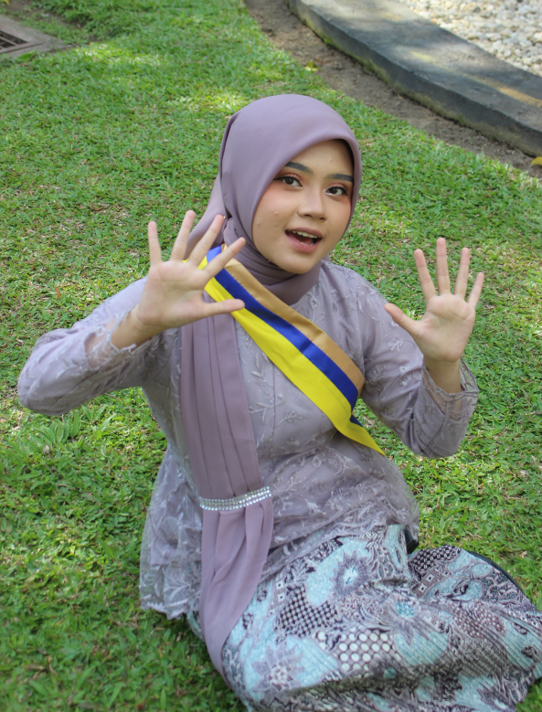
Education 🎓
Gadjah Mada University
Bachelor of Environmental Geography (GPA: 3.82/4.00)
Specialized in GIS, remote sensing, and spatial data analysis. Developed a highly structured, analytical mindset through processing 10-year complex spatiotemporal datasets and applying Machine Learning frameworks—skills that transfer directly to technical SEO and data-driven marketing.
Semesta Bilingual Boarding School
Cambridge International Curriculum (IGCSE / O Level)
Average Grade: 92/100. Analytical and research abilities were strengthened through national science competitions. English proficiency and conversational Japanese were shaped by a bilingual boarding-school environment.
Skills & Expertise 🛠️
SEO & Content
Specialized in maximizing search visibility, aligning content with user intent, and executing on-page optimization.
- On-page SEO (Keyword optimization, Meta tags)
- Content Structuring & Internal Linking
- SEO Tools: Yoast SEO, GSC, Google Analytics
- Trend Analysis & Audience Behavior Insights
- Basic Web Structure (HTML/CSS for SEO)
Programming & Data

Skilled in leveraging code and analytics to identify patterns and structure large datasets for actionable insights.
- Data Processing using Python (Pandas, NumPy)
- SQL for Data Querying & Structuring
- Basic AI & Machine Learning Concepts
- API-Based Data Extraction
GIS & Tools
Strong foundation in spatial analytics, bringing a highly structured, detail-oriented approach to problem-solving.
- Spatial Analysis & Geoprocessing
- Data Validation & Quality Control
- Git & GitHub Version Control
- Large-Scale Geospatial Data Management
Featured Projects 🚀
Showcasing my expertise in SEO, Data Analysis, and Machine Learning
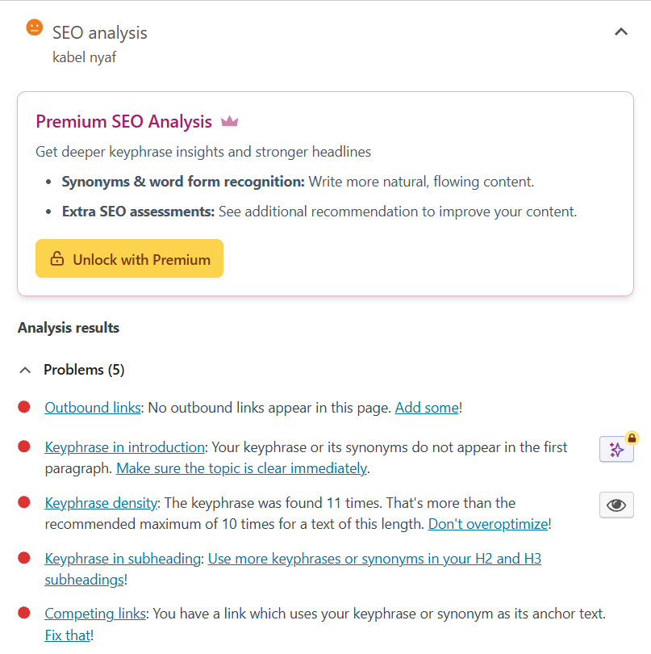
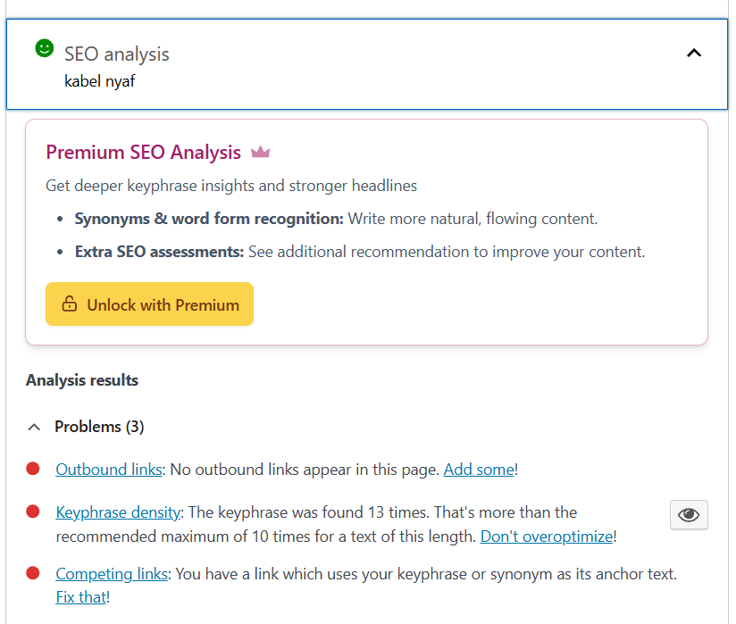
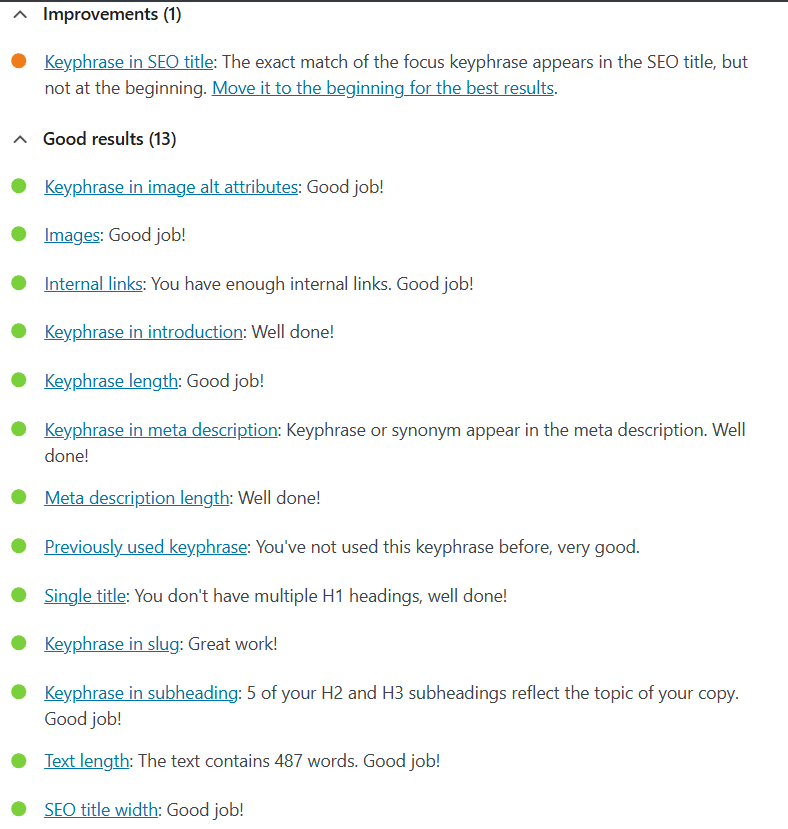
On-Page SEO Strategy for Kitani Cable
Led the on-page SEO optimization for the Kitani website, successfully bridging the gap between product specifications and search intent. Conducted comprehensive content audits using Yoast SEO to resolve crucial issues such as keyword overuse, missing internal/external links, and poor readability metrics. Restructured existing content by optimizing heading hierarchies, refining meta descriptions, and updating image alt text, directly contributing to an increase in organic product visibility and website engagement.
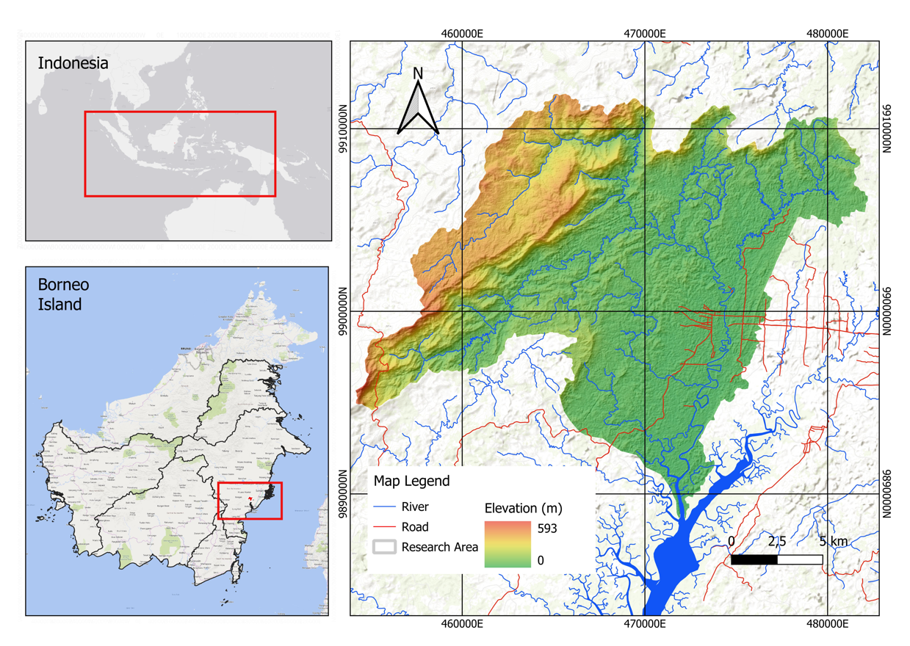
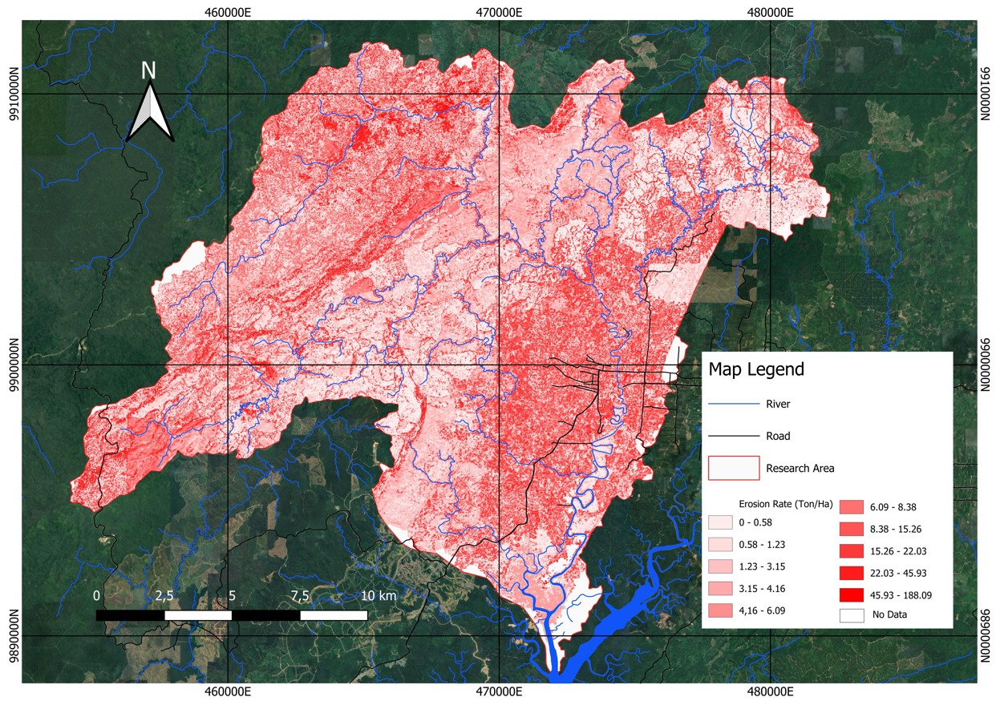
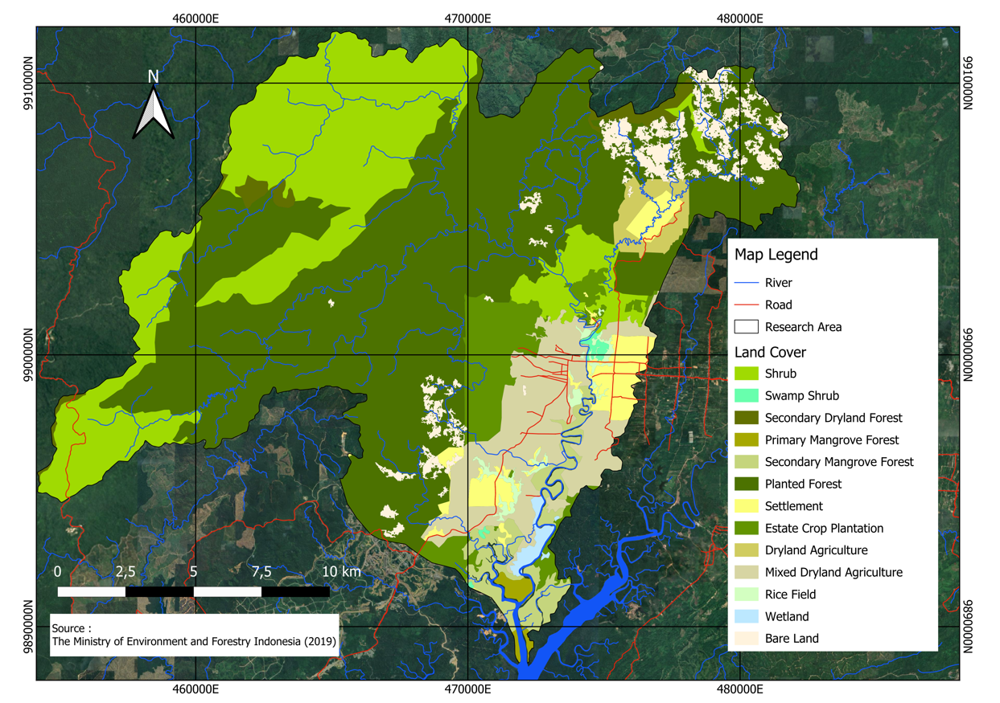
Carbon Analysis at Watersheed Area - FOLU Net Sink 2030
A Q1-level geospatial and carbon analysis project was conducted to investigate Soil Organic Carbon (SOC) loss throughout the Sepaku Watershed. The study utilized Sentinel-2 NDVI, DEMNAS-derived topography, SWAT+ hydrological modeling, and erosion simulations to develop key spatial layers, including the LULC map, erosion susceptibility map, and elevation model. The analysis assessed how erosion influences carbon redistribution, quantified carbon loss, calculated the Carbon Enrichment Ratio (CER), and identified areas most vulnerable to SOC depletion.
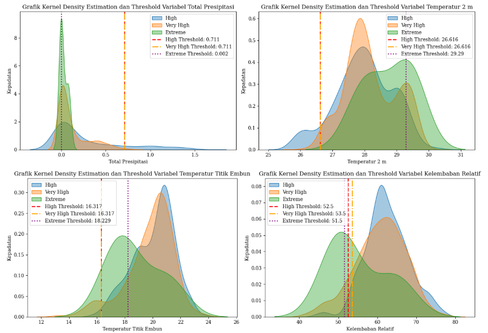
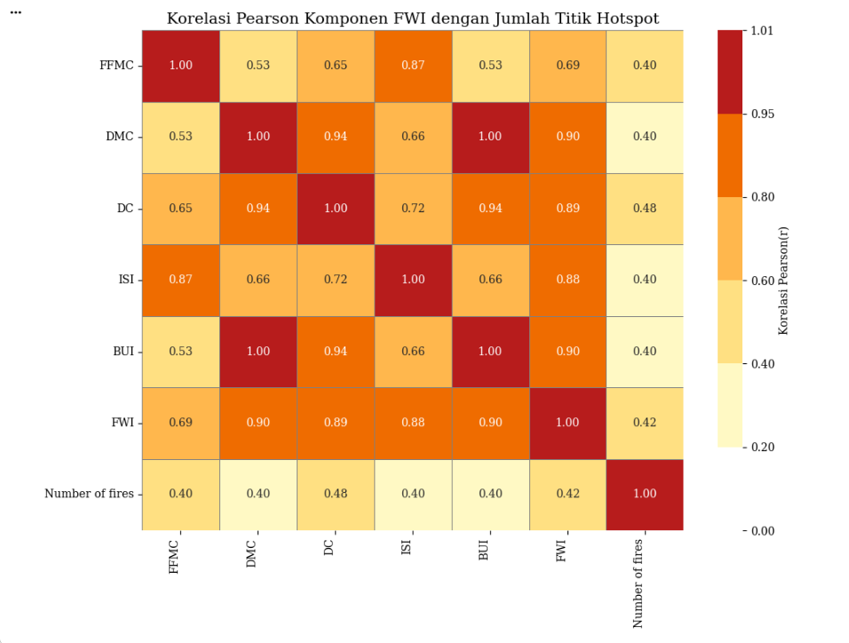
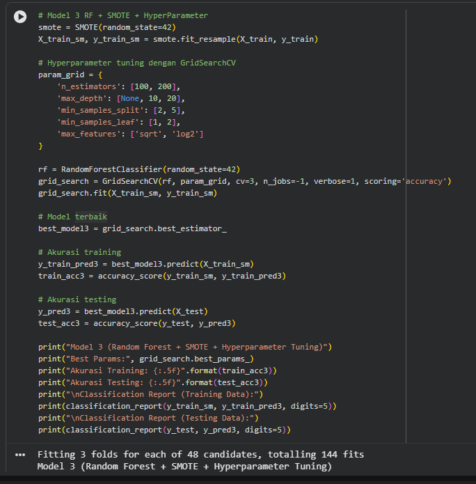
Predictive Model for Forest Fire in East Kalimantan
Developed a Random Forest based predictive model to identify forest fire risk in East Kalimantan using MODIS hotspot data from 2014 to 2023 and seven environmental parameters from ERA5 Land. Threshold analysis based on FWI classes revealed clear environmental shifts toward fire-prone conditions, including precipitation dropping from 0.71 mm/day to 0.002 mm/day, and surface temperature increasing to 29.29°C. Three modeling scenarios were evaluated with the best scenario reaching an accuracy of 99.15%.
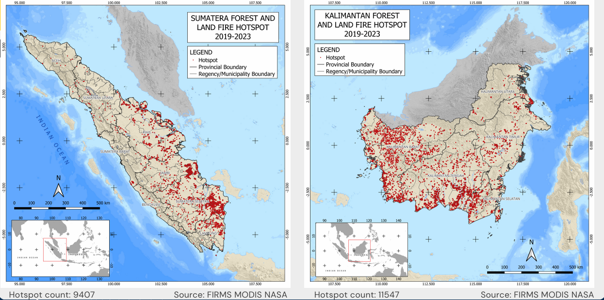
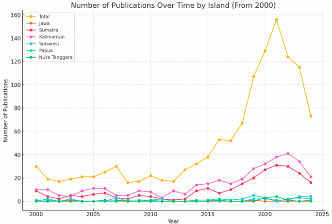
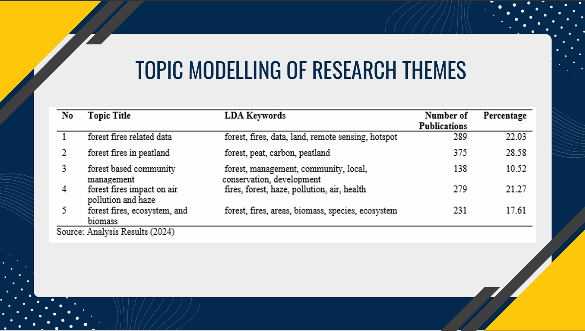
LDA Topic Modeling for Forest Fire Research
Conducted a comprehensive bibliometric and topic modeling analysis using the Latent Dirichlet Allocation (LDA) method to investigate research trends on forest and land fires in Indonesia. The study analyzed 1,312 publications from 2000 to 2024 and identified five dominant themes. Findings reveal that Kalimantan and Sumatra are the most frequently studied regions, closely linked with meteorological drivers such as temperature, rainfall, and major climate phenomena like El Niño.
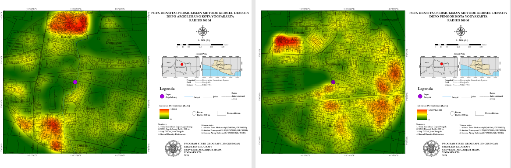
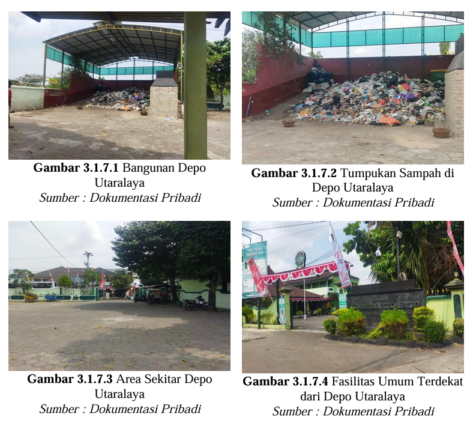
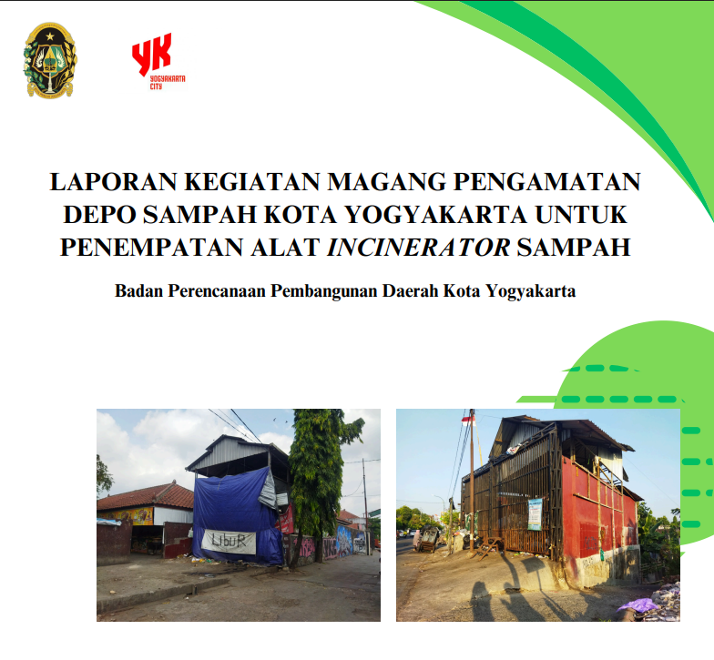
Spatial Analysis & Site Selection
Conducted a field-based assessment across 14 municipal waste depots to evaluate their suitability for waste incinerator placement in Yogyakarta City using a multi-criteria scoring approach. The analysis incorporated on-site surveys and spatial evaluation of key technical and environmental parameters, including land area (>150 m²), accessibility to main roads, surrounding building density, proximity to electricity networks, and exclusion from protected areas.
Professional Experience 💼
SEO Assistant
Kitani Cable Indonesia (Sokaraja, Indonesia) Dec 2025 - Apr 2026Assisted in on-page SEO optimization using Yoast SEO. Improved content quality and structure by optimizing headings, internal linking, and image alt text. Identified and resolved SEO issues such as keyword overuse and weak readability, directly supporting product visibility by aligning content with search intent.
Social Media Specialist
Digispherecreative (Purwokerto) Aug 2025 – Nov 2025Created, edited, and published ~182 short-form video contents on TikTok over a 3-month period, utilizing trend analysis, storytelling formats, and audience behavior insights to maximize reach and engagement.
Data & Research Assistant
Project FOLU Net Sink 2030 (Gadjah Mada University & KLHK) Jul 2025 – Sep 2025Conducted large-scale geospatial data analysis and managed multi-source datasets to support environmental planning. Contributed to spatial database development and a Scopus Q1-indexed publication.
Data Analyst Intern
BAPPEDA DIY & BMKG Aug 2023 – Aug 2024Collected, validated, and managed field and spatial datasets. Authored a published study with spatiotemporal analysis of 3 years of data, highlighting strong research and analytical foundations.
Teaching & Mentoring 👨🏫
Educational leadership and knowledge sharing experience
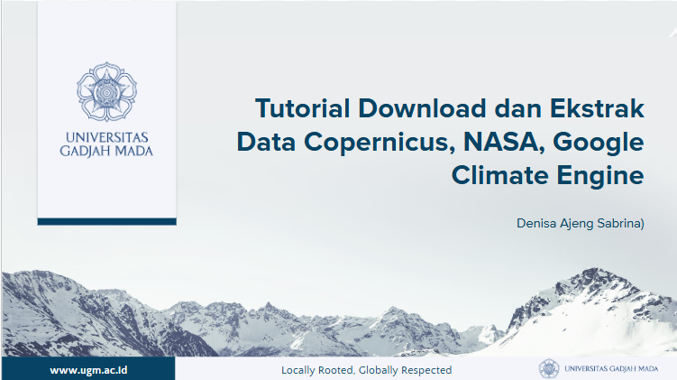

University Instruction
Higher Education & Research MentoringGeomorphology Practicum Course Assistant
Faculty of Geography, UGM | Feb – Jun 2025
Managed 20 practicum students by delivering teaching sessions, preparing and assessing assignments, and providing direct guidance in both laboratory work using geomorphological equipment and field-based practical activities.
Climate Data & GIS Mentor
Gadjah Mada University | Sep – Oct 2024
Guided more than 10 students and researchers (junior high to doctoral level) in climate data analysis workflows using Python, ArcGIS, QGIS, SAGA GIS, and RStudio for geospatial data processing and visualization.
Secondary Education
Exam & Competition PreparationGeography Olympiad Mentor
Semesta Junior High School | 2021
Developed and delivered comprehensive lesson plans tailored to geography olympiad requirements, created practice tests and review materials, and monitored progress with individualized feedback.
UTBK Geography Mentor
Rumah Bina Cendekia Foundation | Oct – Nov 2021
Provided specialized tutoring in geography to 15+ students preparing for UTBK exams, ensuring understanding of complex geographical concepts and principles through customized practice materials.
Certifications 🏅
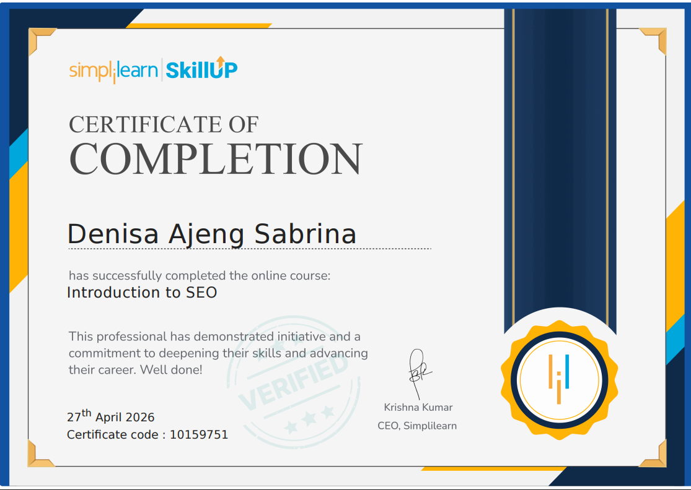
Introduction to SEO
Simplilearn Issued April 2026Mastered core SEO concepts including keyword research, on-page optimization, and technical SEO fundamentals to improve website visibility.
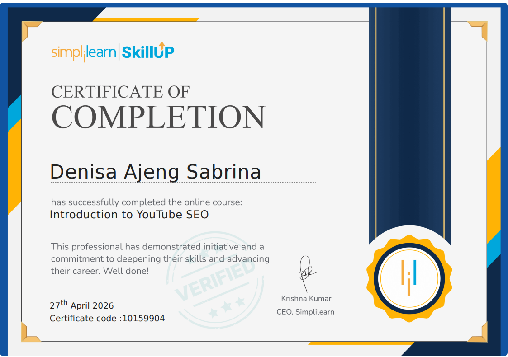
Introduction to YouTube SEO
Simplilearn Issued April 2026Learned video optimization strategies, metadata management, and algorithmic best practices to drive engagement and search ranking on YouTube.
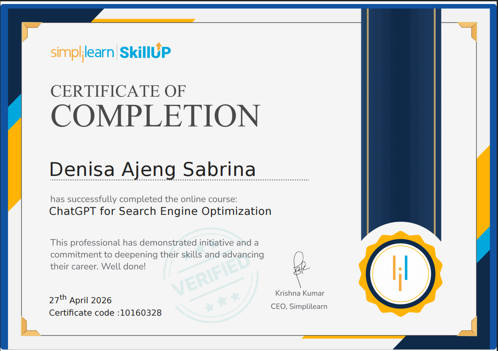
ChatGPT for Search Engine Optimization
Simplilearn Issued April 2026Explored AI integration for content creation, keyword clustering, and prompt engineering to accelerate and enhance SEO workflows.
Azure Fundamentals
Simplilearn Collab With Microsoft Issued Aug 2025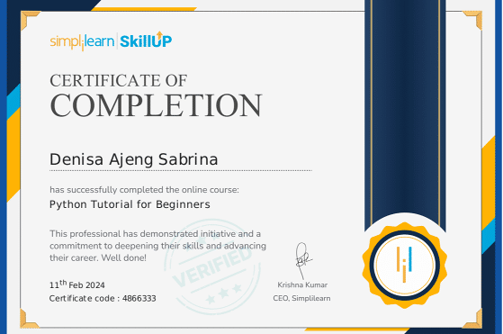
Python Tutorials For Beginners
Simplilearn Issued Aug 2025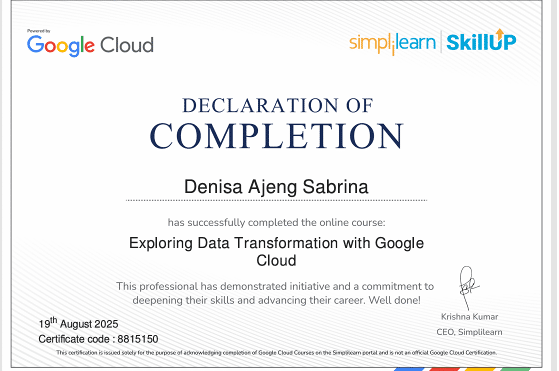
Exploring Data Transformation With Google Cloud
Simplilearn Collab With Google Cloud Issued Aug 2025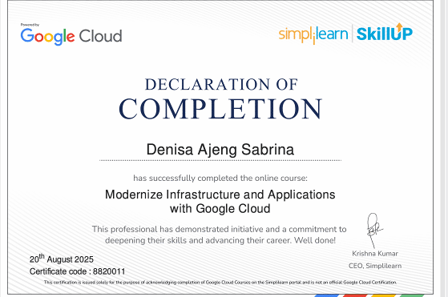
Modernize Infrastructure With Google Cloud
Simplilearn Collab With Google Cloud Issued Aug 2025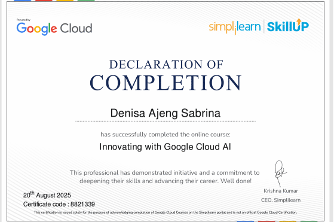
Innovating with Google Cloud Ai
Simplilearn Collab With Google Cloud Issued Aug 2025Encoder-Decoder Architecture
Simplilearn Issued Aug 2025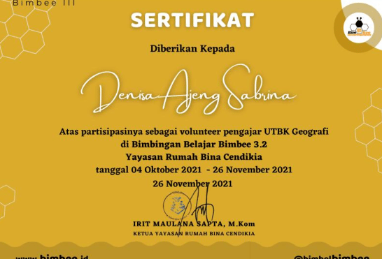
Volunteer UTBK Geography Monitoring
Rumah Bina Cendikia Issued Oct 2021Get in Touch ✉️
Let's discuss how my SEO and Data skills can benefit your next project.